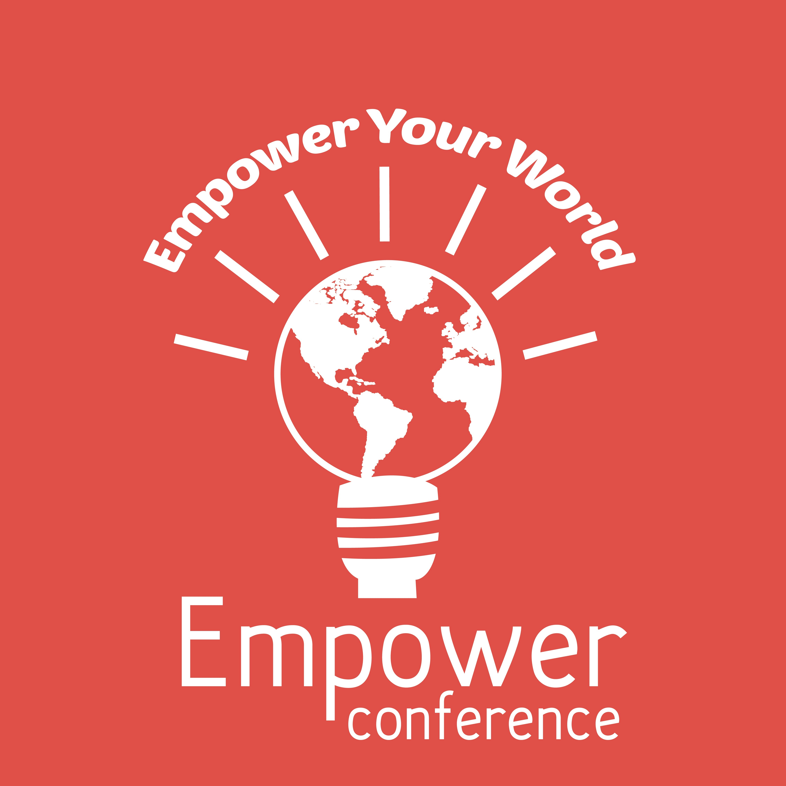
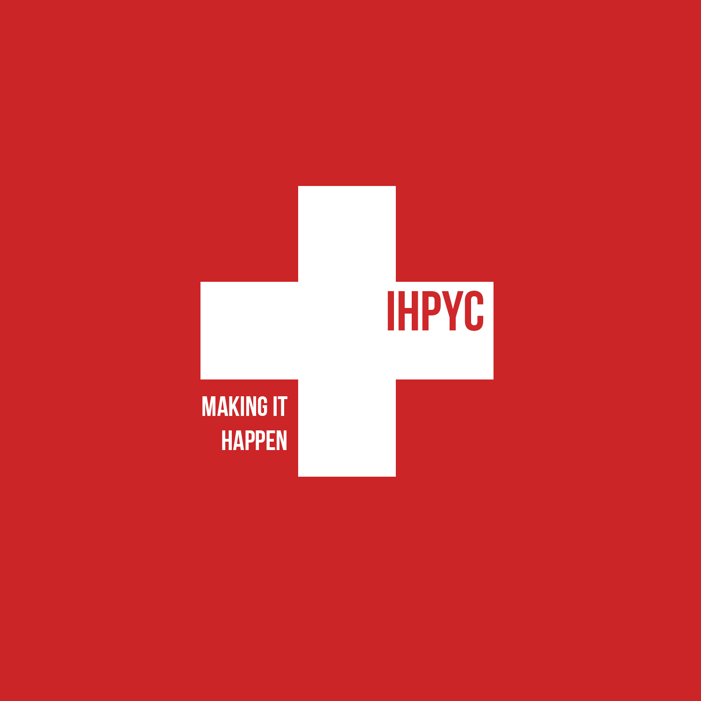
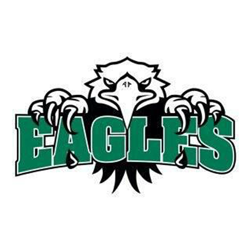
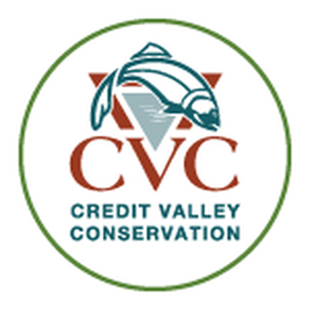
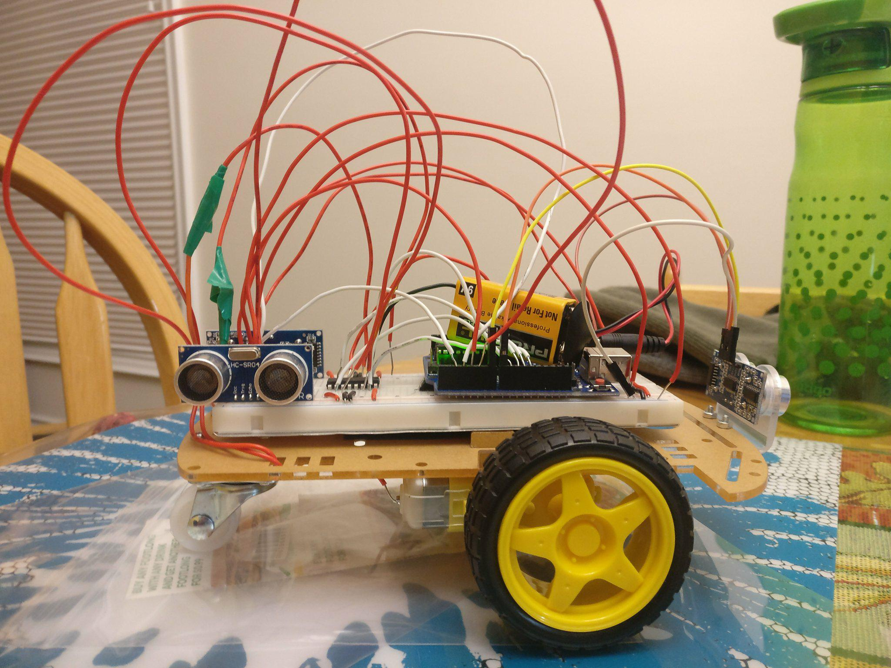
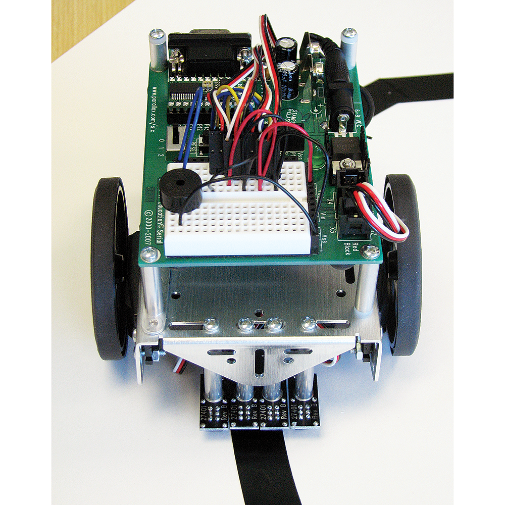
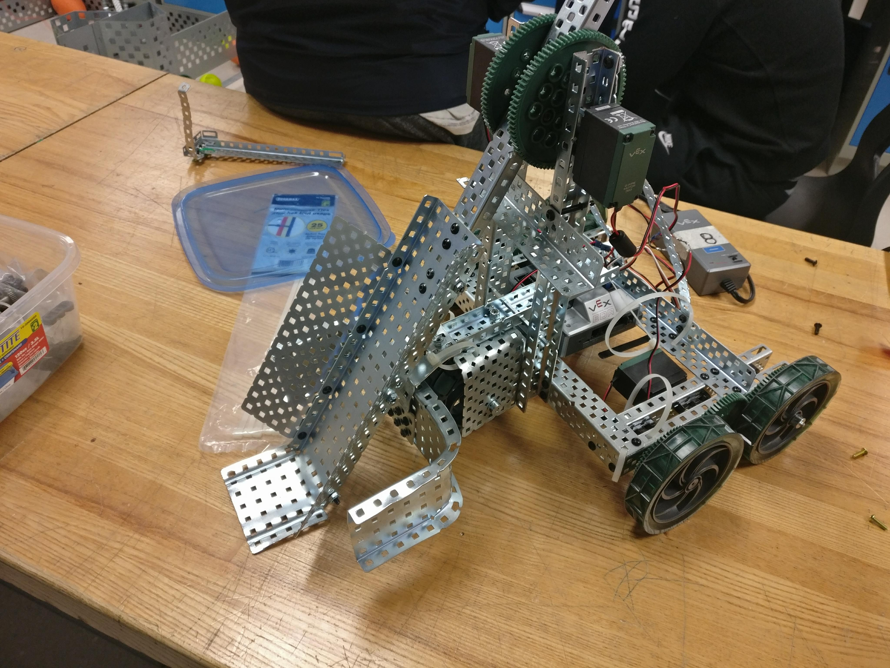
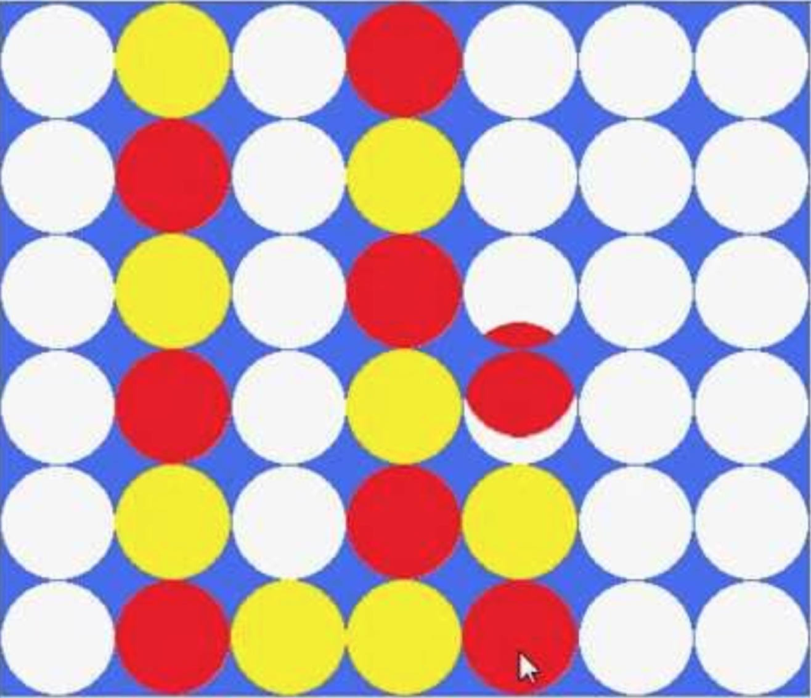
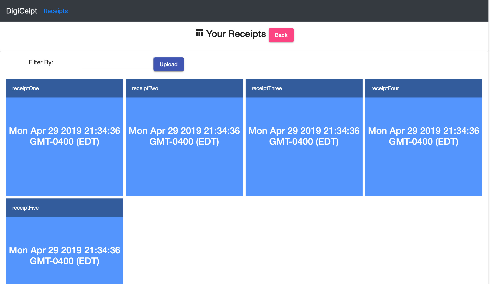
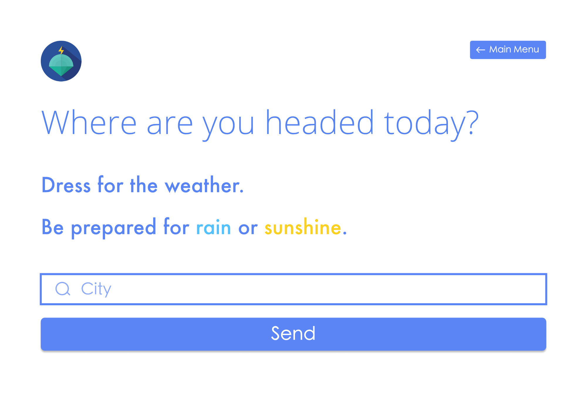

I am currently studying Honors Systems Design Engineering
at the University of Waterloo as an undergraduate student.
My hunger for knowledge constantly pushes me to pursue my goals and aspirations. Some of my
interests include software development and autonomous motion models
Software
C++ • Python • Java • Javascript • SQL TypeScript • Swift • HTML5 • CSS3
Developed a dashboard display using C++, ROS, and QT for
logistics visualization
Drove a 20% decrease in debugging time through a structured debugging interface
Managed an agile team of three software developers to increase sprint
performance through concise planning sessions
Finastra - Software Engineer in Test
January 2019 - April 2019
Used Groovy to write automated test scripts to test web
applications and user interfaces as well as wrote test scripts in JavaScript to
perform end-to-end testing on APIs while partaking in an agile SDLC environment.
The tests developed will perform approximately 70h of manual testing
each time they are run.
Code.org - Hour of Code Mentor
February 2019 - April 2019
Coached various groups of students and sparked interest in the
future of software. Lead activities and aided individuals with program debugging
and understanding. Worked with volunteers and teachers to deliver a smooth,
motivating event
Elections Ontario - TDRO
May 2018 - June 2018
Interact with voters and process ballots through a tabulator
machine following standard protocols. Work as a part of a greater system to
process votes and cooperate with supervisors as well as DROs to ensure smooth
reception of ballots.
Wet'n'Wild Toronto - Associate
May 2017 - September 2017
Operate a point of sales system in order to process purchases.
Interact with guests and ensure that their stay is ideal and comfortable.
Communicate with team members and supervisors in order to maintain order and
tend to customers

Empower Conference Executive
November 2015 - March 2018
Acted as an executive for Empower conference. Communicated
with other executive members and volunteers in order to organize and facilitate
a conference for youth leaders. Organized activities and leadership building
interactions in order to guide youths towards their own unique paths

International Humanitarian Peel Youth Council
October 2015 - June 2016
Act as a Red Cross associated body and work towards
initiatives to solve current world issues. Organize and advertise fundraisers as
well as fundraising events in order to raise money to help global initiatives.

Athletic Council Executive
September 2014 - June 2016
Act as a communicative voice between the student body and
athletic council. Collaborate with the council to plan events and organize
fundraisers in order to raise awareness of physical fitness and sports.

Creditvalley Youth Corps
July 2015
Work with a team and restore nature conservation areas. Plant
trees in lacking spaces as well as maintain trees. Eliminate invasive species
with precision, and maintain hiking trails.
Plasp Childcare Services
September 2014 - May 2015
Supervise children in an afterschool mentorship program. Work
with program supervisors and volunteers to maintain a positive, healthy
environment to foster growth.
Ahmad
Chaudhry
Interests
A range of my pass-time activities and hobbies
Interests
Things that catch my attention
Hobbies
Activities I do in my free-time
Aspirations
Future goals
There are many words that can be used to describe myself, but I would
narrow it down to a passionate individual with perseverance and drive. Some of the the things
that interest me are working with robots, and learning about new technologies. I am a robotics
enthusiast and am constantly on the lookout for new robotics projects to undertake in order to
expand my horizon of knowledge, as well as generally interesting tech articles which gain my
attention. In my free time, I like to play sports as well as interact with friends. I like to
stay fit while spending time with close friends and family. All of these qualities act as small
hobbies of mine which have played roles towards molding my character as I experience new things
everyday. As I grow older, I aspire to be a kind individual and have a positive impact on the
world through innovation. I am most fascinated by autonomous motion and would like to develop
self-aware robots which are aware of their surroundings and can act accordingly.
"Educating the mind without educating the heart is no education at all"
- Aristotle
Autonomous Motion
Created an autonomous robot using multiple ultrasonic
sensors
and programmed the robot to avoid objects which it encounters and choose the optimal
path

As a project to complete in my free time I created an autonomous robot using multiple
sensors. The robot was programmed using an Arduino Board which received data through
the sensors and responded accordingly to control the motors. A sensor at the front
signified when an object was approaching within a certain range from in front, after
which the two sensors on the left and right side would intake a reading in order to
determine which side had the clearest path. The robot would then interpret this
information and take the optimal path in order to avoid obstacles, by controlling
the motors to turn in the desired direction.
You can view the code for the autonomous robot here
Line Following Robot
Created a line following robot using 4 QTI infrared
sensors and a motor controller to control motors.

Created a base for the robot using plexiglass and wheels, serving as the body of the
robot, and attached wheels as well as a breadboard and adruino board to act as the
control center for the robot. Attached two infrared sensors at the front of the
robot in order to intake information about the ground over which the robot is
travelling. Controlled the motors to the arduino board using an L293D chip. If both
sensors read high, then the robot travelled forward along the line. If the robot
veered to the side and was not completely on the line, then one sensor would read
high whereas the other would read low, causing the motors to act accordingly and
readjust so that the line is between the sensors once again.
The code for the line-following robot can be viewed here
Binary Counter
A breadboarding project consisting of multiple chips as
well as 8 segment displays, wired to count from 0-99.
As a project to complete in my free time I decided to create a binary counter. The
counter consists of two 7 segment display chips, an NE555 chip, an 74LS90 chip, and
two CD4056BE chips. The NE555 chip acted as the interval setter between number
changes as its resistances could be changed to increase or decrease the time between
numbers. The 74LS90 chip is a decade counter, which had the job of counting from 0-9
in binary cyclically, and the binary counted was displayed by lighting up the
appropriate LEDs. The CD4056BE chip acted as a digital display driver, as it intook
the binary signals from the 74LS90 chip and converted them into digital signals,
which were then relayed to the seven segment displays in order to display the
numbers.
VEX Robotics
Built a VEX Robot to compete in a robotics challenge

Incorporated a variety of engineering elements including mechanical design, computer
engineering, as well as software engineering in order to create this robot. Built
the base of the robot using a design process to initiate the design, and further
build it using metal. Decided upon the optimal method for the functionality of the
robot, which was then implemented into the design as the main component of the
robot. Connected the components of the robot to the VEX brain of the robot, which
was then programmed in order to control the motors. Program the remote control in
order to control the motors, further controlling the motion of the robot. The
overall objective of the challenge was to lift balls using the robot and place them
on the opponent's side to score points. In order to perform this task with peak
efficiency, my team built the robot using a catapult/platform type functionality so
that it could lift multiple balls at a time and toss them onto the opponent's side,
to score multiple points at once.
Connect Four
Programmed a Connect 4 Game with a graphics user
interface using Java

Using a variety of Java elements, I programmed a connect 4 game with a graphics user
interface. I used numerous Java animation commands to create the graphics user
interface as well as the opening screen. User inputs were programmed by assigning
keys as certain values in order to decide which slot to drop the coin into. The
computer itself dropped its coin into a random column, and the winner was decided at
the end of the game as each slot on the board had its own assigned value and four
assigned slots with the same colour was decided as a winner. Dependant on the colour
of the winning four slots, either the computer or the user was declared as the
winner.
AI Chatbot
Using DialogFlow, created an AI to interact with the
user
In DialogFlow, I created multiple different scenarios by creating user input
scenarios and created responses to the scenarios. I linked multiple scenarios
together and further progressed them using Context elements in the program. Further,
I created different entities to be used dependant on key words used by the user, as
well as many different intents which represent different situations enacted by the
user. Smart integrated agent training allowed the AI to adjust to the phrases and
pick up speech behavior in order to be able to interpret phrases similar to the
programmed phrases and act accordingly.
DigiCeipt
Developed a full-stack web application
using the MEAN stack.

Purpose
DigiCeipt was created as a method for individuals to be able to store their receipts
digitally, rather than having to cope with the hassle of storing physical
receipts.
Technologies
A REST API was developed using an Express backend
and Mongoose, implementing HTTP request methods
to allow communication between the client-side and database.
The dynamic client-side was developed using the Angular Framework
and TypeScript. User file upload was incorporated which then
allowed users to upload an image of their receipt, which was then converted to
digital text through OCR and stored using the
NoSQL Database, MongoDB
These concepts ranged from a wide diversity, including classes to represent
game
components, such as a class for the player, as well as many more
classes for
different components such as zombies and accessories. Singleton
classes were
also incorporated to represent certain objects of which only one instance
could exist, as well as static class implementation as well.
Pointer Implementation
Pointers were implemented for memory maintenance and dynamic memory
allocation.
Memory was allocated when necessary for use and deleted when no longer necessary,
suring optimal use of memory.
Libraries
The SFML Library was used for the game's development and its
many classes as well as class methods were used in the development process for a
variety of areas, such as graphics, audio, and many more areas.
Developed a full-stack application using Python's
flask framework as an entry to the University of Toronto's hackathon, Hack
The Valley

description
OutWeather is a web application that helps users determine what to wear
and what accessories to bring with them when they go outside.
Purpose
This application hopes to to advise users of the weather conditions and
suggest an ideal outfit so that they are prepared for the weather conditions. A
clean and simple UI was designed to make it easy to use. Users can enter their
location, and the app will then proceed to display details on the weather, as well
as a possible outfit to wear from top to bottom.
Technical Details
Python's Flask framework was used to develop the backend of this
web application. User inputted data was sent to the OpenWeather API
to retrieve weather information for the specified city. Jinja2
was then used to inject data into the HTML.